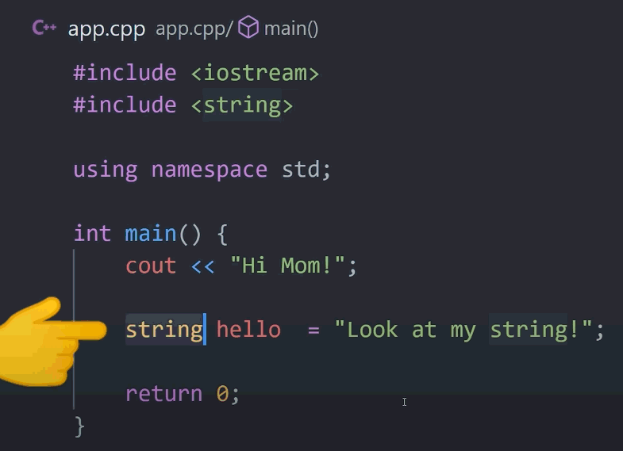

C, вероятно, является старейшим и популярнейшим языком программирования и является основой других языков программирования, таких как C#, Java и JavaScript. C++ — это расширенная версия C. Многие разработчики сегодня пропускают изучение C как такового, в то время как другие считают, что изучение C в первую очередь обеспечивает ценную основу для разработки на C++. Оба языка широко используются в информатике и программировании.
Разработчики C и C++ могут использовать компиляторы для самых разных платформ, что делает приложения, разработанные на этих языках, в значительной степени переносимыми. И C, и C++ считаются высокопроизводительными языками. Таким образом, они широко используются при разработке приложений, где производительность является критической проблемой, таких как клиент-серверные приложения, коммерческие продукты, такие как Firefox и Adobe, и видеоигры. Разработчики C и C++ зарабатывают в среднем 118 366 долларов в год.